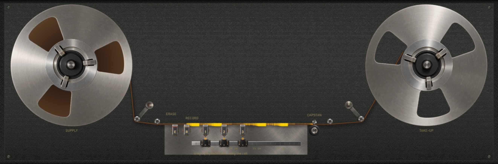
Brokild · VST3 + standalone · operating manual
A tape echo in which nothing is faked. The machine is simulated — the magnetic tape, the heads, the motor and the reels — and the character is what the simulation does. On a closed loop of tape, FLUX MEMORY lets old recordings survive under new ones.
01 · The idea
The usual shortcut for a digital tape echo is a delay line with a wobble, a saturation curve and a noise generator laid on top. Magneto Transport has none of those. There is no wow LFO, no saturation curve and no noise generator. The machine is simulated, and the wow, the saturation and the hiss are what it does.
The tape is not a buffer of samples. It is an array of magnetisation along the tape, in cells of half a micrometre, two tracks wide and four layers deep through the 14 µm oxide coating. A record head writes into it, playback heads read it wherever they stand, and an erase head wipes it. From that one decision the rest follows:
• Delay is distance over speed. It is not a formula in the code; it is the time the tape takes to carry
a recording from the record head to a playback head.
• Change the speed and the echoes already on the tape bend in pitch, because they were recorded at one
speed and are read at another.
• Move a head and it reads a different place: real Doppler, and reading backwards if it outruns the tape.
• Losses scale with speed by themselves: the heads' gaps and spacing are filters in micrometres, not in hertz.
• FLUX MEMORY is simply not erasing a stretch of tape before the record head reaches it again.
The erase head sits 2.5 cm before the record head. The three playback heads ride carriages on a rail, 1.5 to 24 cm downstream of it. The capstan pulls the tape at 4.75 to 76 cm/s, so a head 24 cm out at the slowest speed is about five seconds of delay, and a head at 1.5 cm at the fastest is 20 ms.
delay τ = head distance h / tape speed v
The feedback is a wire: the playback heads, through a bass and treble stage, back into the record amplifier and onto the tape again. It can self-oscillate, and what holds it is the tape running out of magnetisation — there is no limiter anywhere in the loop.
−18 dBFS rms at 1 kHz = 0 VU = 250 nWb/m on the tape, the 1970s studio operating level. With every control at its default, the machine is unity at that level within +0.025 dB.
02 · Quick start
Put Magneto Transport on a track and play. A fresh instance is a well-kept studio machine: a 1970s studio tape at its operating bias, a freshly serviced transport, the reel running at 19 cm/s, playback head 1 at 4 cm — an echo about 210 ms behind — with FEEDBACK and MIX at 35 %.
On a send, switch KILL DRY on and turn MIX fully wet. To use it as a tape machine on an insert, press REPRO.
Point at any control or any part of the machine and wait: a card opens saying what it does, and underneath, how. The presets run from clean to strange and are all levelled to the loudness of what goes in.
Play something sustained and drag playback head 1 along the rail in the machine view, or turn its POSITION knob. The echo it is reading bends in pitch while the carriage moves: Doppler, with no pitch shifter behind it. The head's window shows its delay in milliseconds as it goes. At slow tape speeds a head moved quickly can outrun the tape and read backwards.
Turn FEEDBACK slowly up. Past about two thirds of the knob (68 % at 19 cm/s) the loop runs away and sustains itself, and the tape's own saturation holds it. While it sings, turn TREBLE and BASS, move a head, change TAPE SPEED: the pitch and tone follow the machine. Turn FEEDBACK back down to let it die away.
Set TRANSPORT to LOOP. With LOOP STATE on REC play a phrase. Switch to DUB with ERASE at 0: the phrase stays on the loop, 3.5 dB down once, and comes round every pass while you play over it. What you play now is replaced on the next pass, leaving a faint ghost. Turn ERASE up and the old take loses more — once. PLAY holds the loop as it is; CLEAR wipes it.
And one more: switch MOTOR RUN off. The capstan coasts to a stop and everything on the tape dives in pitch; switch it on and the motor pulls it back up.
03 · The deck
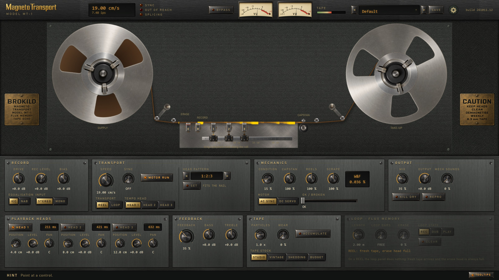
Speed readout, the SYNC, OUT OF REACH and SPLICING lamps, BYPASS, the input and output VU meters, the TAPE meter, presets, the settings gear and the build number.
The transport drawn from the simulation: reels or the loop tank, the heads, the rail, the capstan, and the tape coloured by the magnetisation it carries right now.
RECORD, TRANSPORT, MECHANICS, OUTPUT.
PLAYBACK HEADS, FEEDBACK, TAPE, LOOP · FLUX MEMORY.
One line at the foot of the deck that names whatever is under the pointer, whether or not the cards are on. The TOOLTIPS lamp at its right end switches the cards on and off.
Every knob and switch on the plates is a host parameter — automatable and MIDI-learnable — including the LOOP controls.
04 · The header
| SPEED WINDOW | The capstan's actual speed in cm/s and inches per second. While the motor is still getting there, an arrow shows the target it is heading for. |
| SYNC | Lit while SYNC is setting the motor speed from the host tempo. |
| OUT OF REACH | Red when the speed SYNC asks for falls outside 4.75–76 cm/s and has been clamped. Move the tempo head closer or further out to bring it back. |
| SPLICING | Lit while a new tape is being spliced in. |
| BYPASS | The host's bypass. A 20 ms crossfade to the dry signal; the tape runs on underneath. |
| VU IN · OUT | Rms level with VU ballistics. 0 VU is −18 dBFS. |
| TAPE | How much of the tape's magnetic capacity the record head is using; full scale is the coating's full remanence. |
| PRESETS | ◀ ▶ step through the presets; click the name for the full list; SAVE stores your own. |
| GEAR | Cards on or off, the hover delay, QUALITY (ECO, NORMAL, HIGH) and the About box, which the wordmark opens too. |
Knobs: drag up and down. Hold Shift for fine control. The mouse wheel steps a knob too, finer with Shift. Double-click returns a knob to its default.
Switches (REEL | LOOP, REC | DUB | PLAY and the rest) and push buttons (MOTOR RUN, REPRO, KILL DRY, CLEAR, HEAD 1–3): click.
The machine view: drag a playback head along the rail. Point at any part of the machine for its card.
A control that does nothing in the present state is dimmed, and the LOOP plate's lower line says why — for instance that ERASE acts only in DUB, or that the whole LOOP plate does nothing on a REEL. Nothing is hidden; it waits for the state where it acts.
05 · The machine
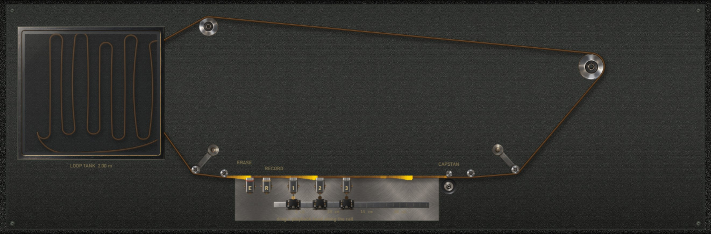
Everything in the picture is a value the engine is computing. The reels turn at the rate the tape leaves and arrives, faster as a pack empties. The colour along the tape is the magnetisation the engine holds right now, so you can watch a recording travel from the record head to the playback heads, and on a loop come round again.
A playback head that is switched on is lit. The rail is scaled in centimetres from the record head, and each head sits where its carriage actually is — which, while it travels, is not yet where its knob points.
A full 10.5-inch reel of 730 m lasts about 64 minutes at 19 cm/s. When it runs out, a fresh one is threaded silently: only the reel radii jump, never the tape under the heads.
| SUPPLY · TAKE-UP | The reels: their eccentricity and the holdback's drag vary the tension, which is wow. |
| LOOP TANK | Holds the loop. Its splice ticks past each head once a period. |
| E · R | The erase head and the record head, fixed. |
| 1 · 2 · 3 | The playback heads on their carriages. Drag one to move it. |
| CAPSTAN · PINCH | Pull the tape. Their runout and bearings are the flutter. |
| GUIDES | Lead the tape and weave it slightly: the source of azimuth error. |
| THE TAPE | Point at it for how the medium is modelled. |
06 · Record
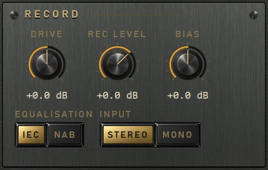
A ferric coating barely records an audio field on its own. The record head adds a 150 kHz bias field many times larger than the signal; as the tape leaves the gap the bias dies away through hundreds of cycles and the particles settle with the signal as a small offset. How deep the bias reaches into the coating decides the sound: too little records the surface only, bright and distorted; too much loses treble.
The input amplifier. It pushes new material harder into the tape — more saturation and compression — while the echoes already circulating keep their level, because the feedback joins after it. The dry signal is untouched.
How hard the record head drives the tape, input and feedback together. At 0 dB a −18 dBFS tone is recorded at 250 nWb/m. Above it the tape saturates, below it the hiss comes up. Because it acts on the feedback too, it moves the loop's gain with it.
Relative to the alignment point — 10 kHz 3 dB past its peak at 19 cm/s, as the 456 data sheet does it. Less: brighter, louder, dirtier, and on a loop old recordings survive more of an overdub. More: cleaner, darker, quieter. Bias also erases: one pass at the operating bias takes about 34.5 dB off an old recording, at half bias only 4 dB. That makes BIAS a loop's overdub depth control.
The record and replay standard. IEC (the default) lifts the treble on replay; NAB also boosts the bass on record, so the lows saturate a little sooner. The time constants follow the tape speed, so the machine is aligned for whatever speed you set.
STEREO records left and right on their own tracks. MONO records the sum on both, for mono-to-stereo use — and the two tracks still come back slightly different, because each has its own particles, its own hiss and its own dropouts.
07 · Transport
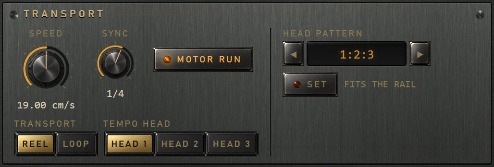
Continuously variable. Slower tape gives longer echoes and a darker, more saturated sound, because the same frequency becomes a shorter wavelength on the tape. A change glides with the motor's inertia, so every echo already on the tape bends in pitch.
OFF, or a note value from 1/16 to 2/1, with dotted and triplet values. SYNC does not shorten a delay line: it sets the motor speed so the tempo head lands on that note at the host tempo. Tempo changes glide.
The head SYNC puts on the beat. The others keep their distances, so they land where their spacing puts them — or on note values too, with HEAD PATTERN.
Starts and stops the capstan motor. Stopped, the capstan coasts down — about 1.9 s from 19 cm/s, about 4 s from 76 — and everything on the tape dives in pitch. Started, it pulls back up through the motor's own dynamics, overshoot and all.
REEL threads an open reel: fresh tape arrives, recordings leave and are never heard again. LOOP runs a closed loop past the heads, round and round. A change is a splice: the echo fades out, a new tape is threaded and it fades back in.
A set of position ratios for the three heads around the tempo head, such as the Space Echo's 1:2:3. SET moves the heads there once, then lets go. See page 10.
08 · Sync in depth
Every head's delay is its distance over the one tape speed, so only one head's delay can be set by the motor. SYNC solves for the speed from the tempo head:
v = htempo / tnote, tnote = 60 · b / BPM
with b the note value in beats. At 120 BPM a quarter note is 0.5 s, so a tempo head at 4 cm
asks for 8 cm/s. The ratio between any two heads' delays is then simply the ratio of their positions, at any tempo.
That is why dragging the tempo head changes the motor speed — and the pitch of everything in flight — while dragging another head changes only its own echo. If the speed asked for falls outside 4.75–76 cm/s, it is clamped and the OUT OF REACH lamp lights; moving the tempo head brings it back.
In LOOP with SYNC on, LOOP BARS cuts the loop to a number of 4/4 bars (1 to 16) at the tempo head's note value. The length depends only on the tempo head's distance and the note value — the tempo cancels:
L = N · (4 / b) · htempo
So the loop stays that many bars at any tempo: a faster tempo runs the same length of tape faster. FREE (0) uses LOOP LENGTH instead.
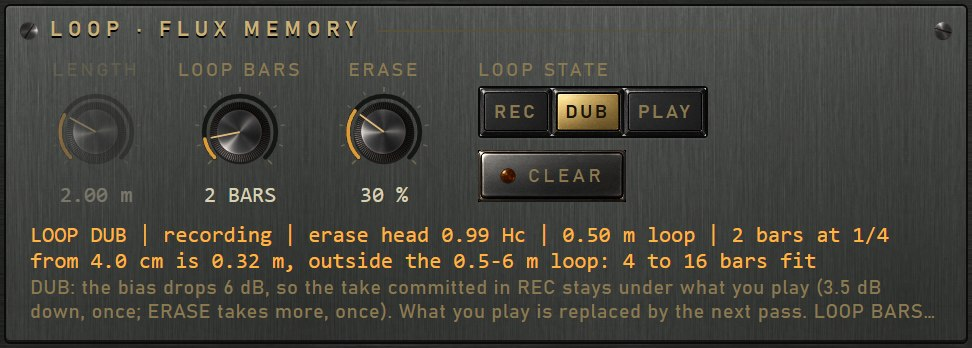
A loop must be 0.5 to 6 m long. At 1/4 from a 4 cm head one bar is 16 cm of tape, so one to three bars are too short and four bars (0.64 m) is the first that fits; all the way to 16 bars (2.56 m) fits. When the count you ask for does not fit, the LOOP readout names the counts that do, or tells you to move the tempo head closer or further out.
Cutting is a splice — a new, blank loop. It happens when the bars, the note or the tempo head change, never while a head is being dragged. Drag the tempo head afterwards and the speed changes, so the loop stops being whole bars: the readout says how many it lasts now. Set BARS again to re-cut.
09 · Playback heads
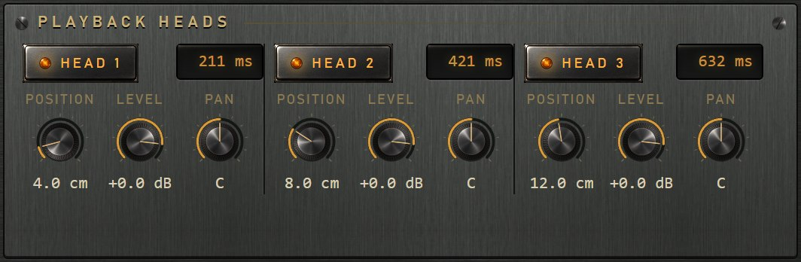
On or off. An off head is silent and takes no part in the feedback. What is on the tape is there whether a head reads it or not, so switching a head on mid-loop plays what has been there all along.
Distance from the record head. The carriage follows the knob with real inertia, at up to 12 cm/s, and while it moves the head reads the tape faster or slower: Doppler. Heads cannot pass each other — their centres stay at least 1.2 cm apart and a carriage stops against its neighbour.
The head's replay level, and so also how much of it goes round the feedback. Above 0 dB the echo can reach the playback amplifier's rail, a smooth knee into +2 dBFS.
Where the head's echo sits in the stereo field. Spread the heads and a multi-head echo becomes a pattern moving across the speakers.
| 1:2:3 | The Space Echo's evenly spaced heads. |
| 1:1.5:2 | Dotted. |
| 1:1.33:2 | A triplet feel. |
| 1:2:4 | Doubling. |
| 1:1.5:3 · 1:3:4 | Two more rhythms between the heads. |
| GOLDEN | 1 : φ : φ², a rhythm with no simple ratio at all. |
The tempo head keeps its place; the unit is its distance over its own ratio, and the others go to the pattern's positions in rail order. Tempo head 1 at 4 cm with 1:2:3 puts the heads at 4, 8 and 12 cm. With SYNC on, every head lands on a note value. Beside SET the panel says FITS THE RAIL, or names the head that would fall off.
SET is a one-shot snap, not a lock: the carriages travel there with their inertia — every echo in flight glides — and afterwards the knobs and the rail are yours again.
10 · Feedback
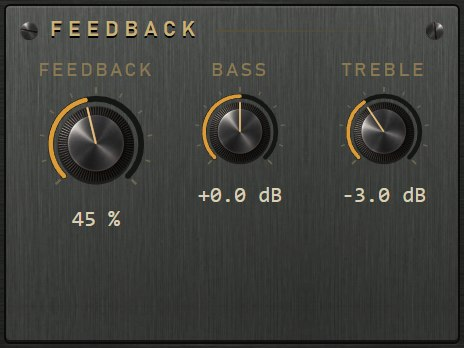
The wire is divided by the number of heads that are on, so FEEDBACK keeps its meaning with one, two or three heads. With heads at 0 dB, runaway was measured at 68 % of the knob at 19 cm/s, and 100 % runs away at every speed.
How much of the playback is wired back into the record amplifier, so the echoes repeat. Each repeat goes through the whole record process onto the tape again, so it picks up another pass of the tape's saturation, losses and noise. Past about two thirds of the knob the loop self-oscillates.
A low shelf on the wire. Cut, each repeat grows thinner; boosted, heavier. The first echo from each head is not affected — only what goes round again — and the shaping compounds with every pass. A boost runs away sooner and lower, into the thud real tape echoes are known for.
A high shelf on the wire. Cut, the repeats darken like a worn echo; boosted, they stay bright longer. A treble boost meets the tape's saturation first, because the record pre-emphasis already lifts the top, so it compresses.
There is no clipper and no limiter in the loop. What contains a self-oscillating loop is the tape running out of remanence: it sits just under full magnetisation, and its pitch and tone are set by the heads, the tone shelves, the head bump and the tape stock. Watch the TAPE meter in the header climb as it does. The output stage then has a smooth knee into a rail at +2 dBFS, so a singing loop peaks just under it however hard it runs.
Every repeat is a new recording, so the hiss, the flutter and the losses build up the way they do on a real echo. For a loop that stacks layers rather than echoes, FEEDBACK is also the tape way to overdub (page 15).
11 · Mechanics
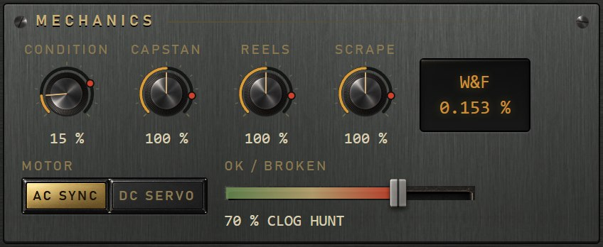
How worn the transport is: 0 ideal, 15 freshly serviced (the default), 100 worn out. It sets physical causes — runout, rough bearings, tension variation, friction — and the wow and flutter are what they do.
How CONDITION's wear is shared. CAPSTAN: runout, bearings, motor ripple — flutter, a quick warble. REELS: eccentricity and holdback friction vary the tension, and tension stretches the tape — wow, a slow drift. SCRAPE: the tape sticks and slips over the heads and rings at a few kilohertz — a fuzz around a tone, not a pitch wobble.
AC SYNC, a synchronous motor that hunts gently around a new speed, with ripple at twice the mains. DC SERVO, a tachometer-controlled motor, quicker and firmer, with its own slot ripple. Heard whenever SYNC, TAPE SPEED or MOTOR RUN moves the speed.
A neglected machine in one slider. It moves CONDITION, CAPSTAN, REELS, SCRAPE and WEAR from where the knobs are towards a wreck, sags the bias oscillator, and on a loop weakens the erase head. Below the middle it is exactly those knobs turned by hand. Past the middle three faults appear: CLOG, oxide on a playback head, the treble dropping away for seconds; HUNT, the speed control swinging the pitch slowly; and CRINKLE, a crinkled stretch of tape, a burst of dropouts and flutter once a loop. A broken machine is quieter, never louder.
Reads the machine the way a DIN/IEC meter reads a real deck: how much the replayed speed wavers against the speed it was recorded at, weighted to how audible it is, as 2σ over about two seconds. Freshly serviced it reads about 0.036 %, worn out 0.24 %. After a speed change it shows settling until the change has passed the head. Scrape barely shows: the weighting has fallen away long before its kilohertz band.
12 · Tape
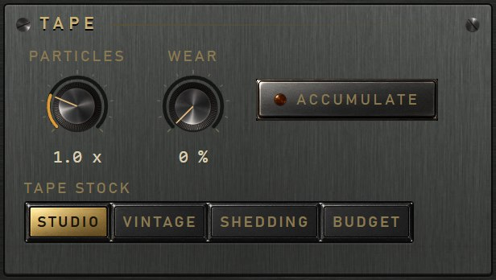
A cell of coating holds a finite number of magnetic particles, each pointing one way or the other, so its magnetisation carries a statistical spread. That spread, written onto the tape every time a cell is recorded, is the hiss. It is largest where the tape is demagnetised and vanishes where it is saturated. The studio tape at 19 cm/s measures −61.9 dBA under 0 VU.
STUDIO: a 1970s high-output studio tape, 456 class, the default. VINTAGE: a 1960s low-output tape, less headroom and more hiss. SHEDDING: the studio tape decayed — oxide lost, a sticky binder, deep dropouts. BUDGET: cheap echo-machine tape. Like a technician loading a reel, the machine sets bias, record level and record treble for each fresh stock; changing it threads a new reel. Vintage and budget have an operating level of 185 nWb/m, so the same RECORD LEVEL saturates them sooner.
The particle count against the stock's own. Ten times as many gives 10 dB less hiss. At the top the coating is a continuum and the tape is silent: silence in gives exactly silence out. At 0.1× it hisses 10 dB more than the stock does.
How worn the tape is: oxide lost, a rougher surface, more dropouts, debris lifting it off the heads. Worn tape is duller, quieter and less steady; at 100 % a quarter of the oxide is gone (2.6 dB at 1 kHz). The same lift off the head costs four times the decibels at a quarter of the speed.
A loop wears a little on every pass over the heads, at its stock's own rate — a studio loop over some thousands of passes, a shedding one in a few hundred — and keeps its wear with the project. Off, the tape stays as WEAR sets it. A reel never accumulates: its tape passes the heads once.
Modulation noise, roughness and dropouts are properties of the tape, drawn from the position on it: a reel never repeats them, and a loop brings them round every pass. The hiss is new on every pass, because the bias re-randomises the particles.
13 · Loop · Flux memory
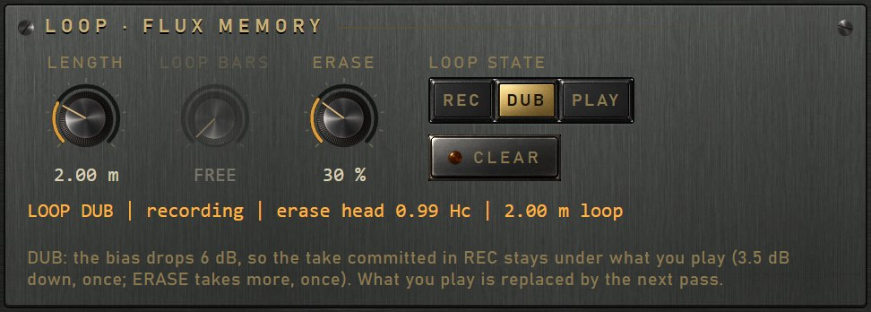
On a REEL the erase head always runs full and fresh tape keeps arriving, so nothing recorded ever comes back:
the LOOP plate does nothing, and its readout says REEL: fresh tape, erase head full.
On a LOOP the same tape comes round every period, T = L / v — a 2 m loop at 19 cm/s returns every 10.5 s. The LOOP plate decides what the heads do to it:
The erase head wipes the loop at full field and a fresh take is recorded every pass: the plain echo, exactly as on a reel. The default.
Sound-on-sound. The bias drops 6 dB, so the take committed in REC stays under what you play now. ERASE sets how much of it the erase head takes.
Record and bias off, the erase field ramped to exactly zero: the loop plays unchanged, for as long as you like. FEEDBACK has nothing to write.
In DUB, how much of the take committed in REC the erase head takes. At 0 the head is off and the take stays (less the 3.5 dB the lowered bias takes once). The knob walks from a pass losing under a decibel to one losing 60 dB at 90 %, and 100 % wipes. It acts once.
One full pass of the erase head over the loop at full field, with record off. The readout shows CLEARING while it runs; afterwards the loop is blank, the same as virgin tape.
Cut in 5 cm steps. A change is a new loop: fresh, blank tape is spliced in, since no machine can stretch a loop. The playback heads are kept clear of the stretch of tape already on its way back to the erase head.
With SYNC on, the loop is cut to whole bars instead (page 9). LOOP LENGTH waits.
The loop carries a real splice, a 20 µm butt joint with splicing tape on the back, which ticks past each head once a period.
14 · Flux memory in depth
FLUX MEMORY is a variable erase head on a finite loop of tape. What it can do is decided by three facts, measured by the offline reference model of the oxide:
The coating is an ensemble of particles with switching fields spread around its coercivity. A dying erase field switches exactly the particles it can reach and leaves the rest — and the same field reaches the same particles next time. So partial erasure is one shot, not a fade: a second pass at the same ERASE setting takes nothing further, turning it up takes more, turning it down brings nothing back.
A take recorded at the operating bias reaches deep into the coating. A later pass at a lower bias reaches only the surface, so the take survives it, permanently — bass best. In DUB the take loses 3.5 dB once, and 10 kHz about 9.7 dB.
Each overdub in DUB is recorded at the lowered bias, so the next pass replaces it, leaving a ghost about 24 dB down — louder the harder you drive, about 13 dB down when driven 12 dB hotter — and lower BIAS keeps more.
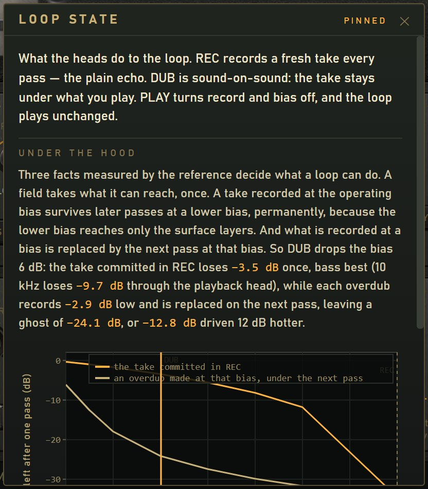
A bed that stays. REC a phrase, then DUB with ERASE at 0: play over it as long as you like.
Ghosts. DUB with ERASE around 30 %: the take loses part of itself once and then stays, coming round at the loop's
period under the heads' own echoes — two rhythms at once.
Layers. Overdubs do not stack on one track of tape. What stacks layers is FEEDBACK, as tape musicians did it: what the
heads play is recorded again with what you add.
Freeze. Switch to PLAY and the loop holds.
15 · Output
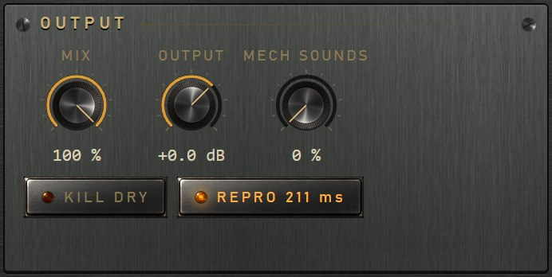
In the gear menu: ECO runs the tape model at the host rate, NORMAL (the default) at twice it, HIGH at four times. The tape's resolution is in micrometres whatever you choose; the tier trades processor time against the internal rate. Worst case measured (76 cm/s, three heads, feedback): 14.5 %, 20.7 % and 30.1 % of one core. A change threads a fresh tape, and is saved with the project.
Dry to wet, equal power, so the loudness stays steady across the knob. The plug-in reports no latency: the echo is where the head distance says.
A clean final level. It changes loudness only; RECORD LEVEL, DRIVE and BIAS change the sound.
Removes the dry signal whatever MIX says, for a send or aux. Turn MIX fully wet for the echo at unity.
A tape machine on an insert. Head 1 is the replay head, heads 2 and 3 and FEEDBACK are off, and head 1's delay is reported to the host so the track stays in time; MIX blends the tape with the dry signal, delayed to match. Everything the tape does stays on the signal — stock, bias, saturation, hiss, wow and flutter. Moving head 1 or changing the speed changes the delay the host must make up, and some hosts click when it does.
The machine's own sounds on the output, at their own level: the AC motor's hum or the servo's whine, the capstan's rumble, the reels' bearings, the tape over the heads, the splice ticking once a loop, the carriages travelling, the solenoids clunking. All driven by the transport, so they slow down and speed up with it. 0 is off and the output is the machine exactly. Not part of a preset.
A 20 ms crossfade to the dry signal, delayed by exactly the latency reported, so a bypassed REPRO stays in time. The tape keeps running: switching back in finds the echoes where they would have been.
16 · Presets
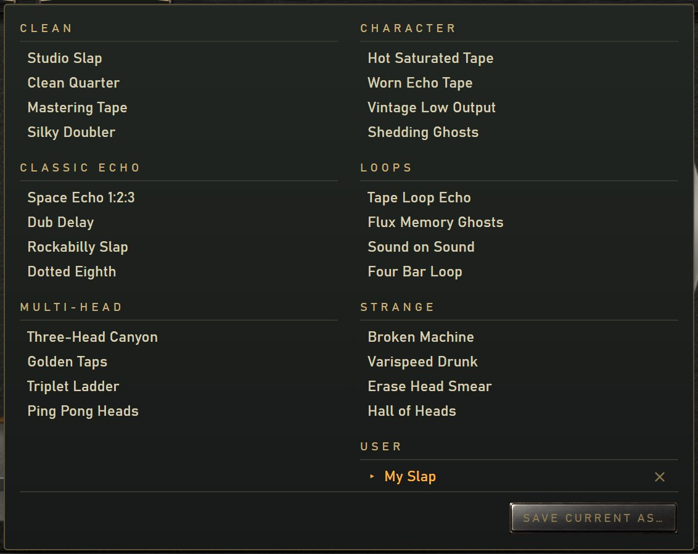
Every factory preset's output is set so that it is as loud as the programme going in, so a bypass A/B is a level match. The presets are also the host's programs.
SAVE in the header stores the state of every control as a user preset, one file each in
Documents\Brokild patches\Magneto Transport. Deleting one moves it to a Deleted folder rather than destroying it.
BYPASS and MECH SOUNDS are never changed by a preset: a preset will not unbypass a bypassed plug-in, nor switch the machine's noises on or off.
17 · The cards
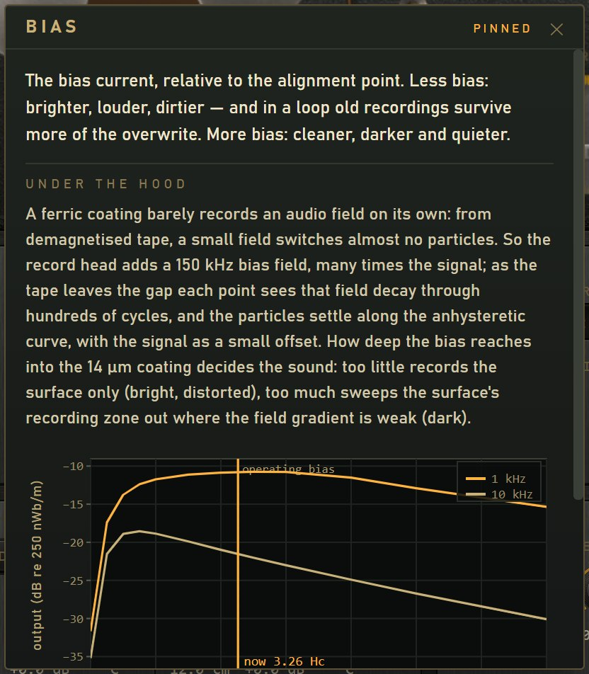
Point at any control, readout or part of the machine and hold still: after the hover delay a card opens beside it, never over it. There are 66 of them.
At the top, in plain words: what the control does to the sound.
Below, the physics: the mechanism, a few equations, and where it helps a figure drawn from the reference model or the bench, with a live marker that follows the control. Read as far as you like.
Where the model stops short of a real machine, the card says so.
Click a card to pin it; it stays while you turn the control and its figure keeps following. Esc, the ✕ or a click elsewhere closes it.
Every number quoted on a card is written by the plug-in's test bench when it is built, beside the check that measures it. A retuned model cannot leave a stale claim on screen.
The gear in the header switches the cards off and sets the hover delay (0.2 to 3 s, 2 s by default). The hint line at the foot of the deck stays either way. These settings are yours, not the project's: they live in the plug-in's own settings file.
18 · Measured
| Unity at the operating level, defaults | +0.025 dB |
| Record level transfer against the offline reference, −20 to +16 dB | within 0.008 dB |
| Delay against head distance / speed | within 0.720 µs |
| Doppler of a moving head against (v − ḣ)/v | 0.000 cent |
| Maximum output level (3 % third harmonic), re 185 nWb/m; the 456 sheet gives +12.3 | +12.3 dB |
| Third harmonic at +6 dB over 0 VU | 1.24 % |
| Recording loss at 15 kHz against the reference | within 0.10 dB |
| Aligned machine, flatness 40 Hz to 15 kHz | 0.47 dB |
| Hiss, studio stock, 19 cm/s, under 0 VU | −61.9 dBA |
| Hiss spectrum against a continuous coating | within 0.58 dB |
| Modulation noise skirt, studio stock | −58.7 dB |
| Wow and flutter, DIN/IEC weighted 2σ: freshly serviced · worn out | 0.036 % · 0.24 % |
| Feedback runaway, one head at 0 dB, 19 cm/s | 68 % of the knob |
| Bias erasure, one pass at the operating bias (reference) | −34.5 dB |
| Erase at 1.5 Hc: engine · reference | −51.9 · −51.5 dB |
| DUB: the committed take, once (reference −3.5) | −3.4 dB |
| DUB: the ghost of an overdub (reference −24.1) | −25.0 dB |
| REPRO latency, reported against measured | 0.53 samples |
| Coast-down against the bearing and roller law | within 0.9 % |
| Track skew from azimuth, worn transport | 18.4 µs |
| Tape at 100 % wear, at 1 kHz | −2.6 dB |
| Aliasing, 9 kHz at 12 dB over 0 VU, 48 kHz, NORMAL | −63 dBFS |
| Cost, worst case (76 cm/s, three heads, feedback): ECO · NORMAL · HIGH | 14.5 · 20.7 · 30.1 % |
An offline reference simulates the record process in full — every half-micrometre cell carried through the record head's gap field with the 150 kHz bias, at eight depths, through a Preisach model of the oxide. It runs far slower than real time. The plug-in uses tables measured from it, and the bench proves the two agree; the figures above are its. Cost is per cent of one core at 48 kHz stereo.
19 · Specifications
| Format | Windows VST3 effect (delay) and a standalone application |
| Channels | mono to mono, mono to stereo, stereo to stereo; a two-track head stack |
| Parameters | 47 host parameters, all automatable, the loop controls included |
| Transport | REEL, or a LOOP of 0.5–6 m in 5 cm steps; AC synchronous or DC servo motor |
| Speed | 4.75–76 cm/s continuously, or synced: 1/16, 1/16D, 1/8T, 1/8, 1/8D, 1/4T, 1/4, 1/4D, 1/2, 1/2D, 1/1, 2/1 |
| Heads | erase, record, three playback heads on a 1.5–24 cm rail: delays from 20 ms to about 5 s |
| Tape | four stocks, particle count, wear and accumulating wear; IEC or NAB equalisation |
| Quality | ECO, NORMAL, HIGH: the tape model at the host rate, 2× or 4× |
| Latency | none reported; in REPRO, head 1's delay |
| Presets | 24 factory in six groups, levelled; user presets as files |
| Panel | needs the Microsoft WebView2 runtime; if it is missing the plug-in says so and gives the download link |
Copy the Magneto Transport.vst3 folder into Program Files\Common Files\VST3 and rescan in your host.
Magneto Transport.exe is the standalone and needs no installation.
Print-through and self-demagnetisation (inaudible at the time scales of an echo loop), temperature and time decay. Vector magnetisation and the recorded pattern's own demagnetising field: the scalar model suits oriented, needle-shaped particles. The bias is simulated explicitly only in the offline reference; the real-time engine uses a validated equivalent. Electronic noise such as a preamp's hiss, which is what lets PARTICLES reach true silence. Slip between tape and capstan. Head wear (azimuth follows the transport's condition). Dropouts at the record head, and the crinkle's effect on recording. The tape span is treated through its resonance, not a full wave equation. All four stocks share a 14 µm coating. Old material recorded at a bias other than the operating bias is overwritten as if it had been. The mechanical sounds are synthesised from the mechanism's rates, not recorded, and the room is not modelled.
The studio coating is fitted to the Quantegy 456 data sheet; the hysteresis is a Preisach model; the record head's field is Karlqvist's; the wow and flutter come from runout, bearings, tension and friction. It is a musical instrument built on that physics, and the numbers on page 19 say how close it comes.
Peter Bøggild, October 2026. Free software under the GNU AGPLv3; unsigned builds, offered as is. Source: github.com/peterboggild/BrokildApps